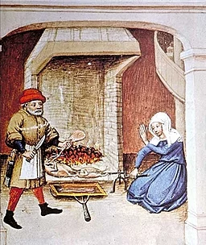

From today's featured article

{kind=link}
Spit-roasting, from a 1432 edition of the Decameron
Medieval cuisine includes the foods, diets, and cooking methods of various European cultures from the 5th to the 15th century. Cereals were the most important staple during the Early Middle Ages: barley, oats, and rye were eaten by the poor while wheat was generally more expensive. These were consumed as bread, porridge, gruel, and pasta by people of all classes. Cheese, fruits, and vegetables were important supplements. Meat, including pork, chicken, and other domestic fowl, was more expensive, and game was common only on the nobility's tables. Many freshwater and saltwater fish were also eaten; in the north, cod and herring were mainstays. In contrast to the exotic spices and expensive imported food of the nobility, working-class food was less refined, as mandated by decrees and social norms. A highly spiced sweet-sour food repertory developed among the upper classes in the Late Middle Ages. (Full article...)
Recently featured:
Did you know ...
- ... that Finnish-American model Selene Mahri (pictured) married three millionaires and is credited with inventing the saying "Marriage is a question of give and take. You give. I take"?
- ... that a 1956 eruption of Bristol Island drove Argentina to abandon a hut they had built on Thule Island?
- ... that John A. Kennedy was placed near the top of the 1964 Illinois House election ballot because of his name?
- ... that Annalee Newitz chose to set their debut novel Autonomous in the Canadian prairies because it was "the kind of place that often gets forgotten"?
- ... that the Committee for the Prevention of Destruction of Antiquities on the Temple Mount used aerial photography to monitor the removal of antiquities during construction at Solomon's Stables?
- ... that the Siberian columbine has been crossed with another species in the genus Aquilegia to determine the gene behind the genus's nectar spurs?
- ... that film director Christina Rosendahl started her career with a documentary about her sister Pernille's music career?
- ... that MI-5 had trouble finding people to interview?
In the news
- In Australian rules football, Collingwood defeat the Brisbane Lions to win the AFL Grand Final.
- A suicide bombing kills more than 50 people in Mastung, Pakistan.
- Waheeda Rehman (pictured) receives the Dadasaheb Phalke Award for her work in Hindi cinema.
- A fire at a wedding in Qaraqosh, Iraq, kills more than 110 people.
On this day
October 1: Unification Day in Cameroon (1961); Independence Day in Tuvalu (1978); Filipino American History Month begins
- 959 – Edgar ascended to the English throne upon the death of his brother Eadwig.
- 1386 – The Wonderful Parliament met at Westminster Abbey to address King Richard II's need for money, but soon changed focus to the reform of his administration.
- 1890 – At the encouragement of preservationist John Muir and writer Robert Underwood Johnson, the U.S. Congress established Yosemite National Park (pictured) in California.
- 1918 – First World War: British and Arab troops captured Damascus from the Ottoman Empire.
- 2003 – A levy was imposed on the hiring of foreign domestic helpers in Hong Kong, who numbered in the hundreds of thousands at the time.
- Kong Wei (d. 895)
- Caroline Harrison (b. 1832)
- Helen Mayo (b. 1878)
- Nani Alapai (d. 1928)
More anniversaries:
Today's featured picture

|
Polistes gallicus is a species of paper wasp found in a region from the Alps south into northwest Africa and east to Croatia and Corfu. It can live in a range of temperatures including warmer climates and cooler regions north of the Alps, with nests created in these various conditions. A social insect, the species uses an oral secretion to construct its nests, which consist of a combination of saliva and chewed plant fibers. This structural mixture physically protects the nest from various harsh elements and from weathering over time. Like other members of the subgenus Polistes, P. gallicus has recognizable bright yellow and black markings. It has a smaller body than many others from the genus that overlap in range. This P. gallicus individual was photographed in Bavaria, Germany. Photograph credit: Reinhold Möller
Recently featured:
|
Other areas of Wikipedia
- Community portal – The central hub for editors, with resources, links, tasks, and announcements.
- Village pump – Forum for discussions about Wikipedia itself, including policies and technical issues.
- Site news – Sources of news about Wikipedia and the broader Wikimedia movement.
- Teahouse – Ask basic questions about using or editing Wikipedia.
- Help desk – Ask questions about using or editing Wikipedia.
- Reference desk – Ask research questions about encyclopedic topics.
- Content portals – A unique way to navigate the encyclopedia.
Wikipedia languages
This Wikipedia is written in English. Many other Wikipedias are available; some of the largest are listed below.
-
1,000,000+ articles
-
250,000+ articles
-
50,000+ articles